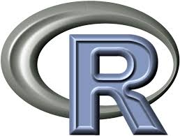
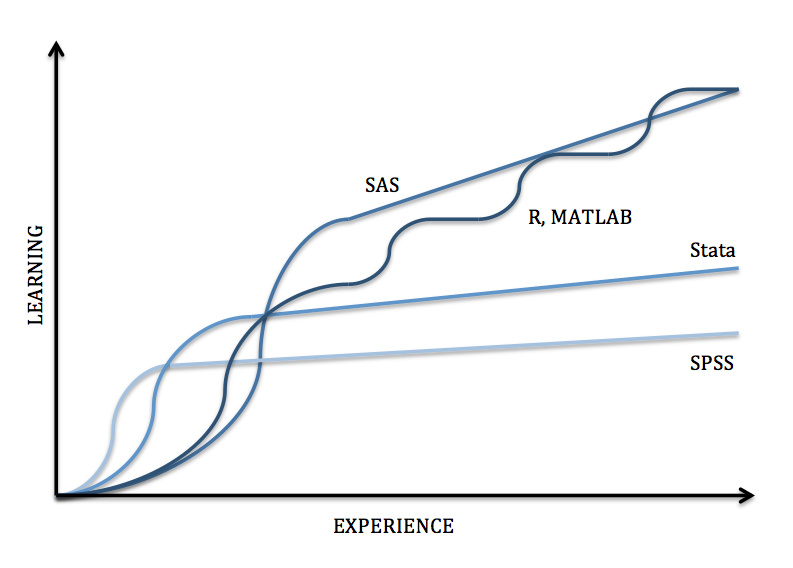

Using Openness as Foundation for Research Data Management Services
Vicky Steeves and Nick Wolf | November 19, 2016

Open Source Research Software: Benefits
1. Cost
- Yes, open source is about transforming certain types of expenses (e.g. license fees) into other types (e.g. salaried/volunteer labor; maintenance costs)
- Yes, sometimes open source can be more expensive overall once maintenance and personnel are factored in...
...though see Wong and Sayo (2003), Russo et al. (2005), Dehinbo & Dehinbo (2013) noting that proprietary software still often outstrips open source in costs
Open Source Research Software: Benefits
1. Cost
- BUT...Remember that we are talking about research software used by researchers and their community, not enterprise-level library services (most of the current studies only look at open source enterprise-level software)
- Thus, the line between doing research, and building software, is blurred...so to a greater degree the (research) labor also covers development cost
Open Source Research Software: Benefits
We pause to mention:
Open Source Research Software: Benefits
2. Technology
- Open source development depends on a collaborative community dedicated to uncovering knowledge. That aligns, as Dehinbo & Dehinbo note, with the values of the university
- Most importantly, open source community of researchers have responsibility for maintenance, requiring an ongoing push against obsolescence and closed code bases
Open Source Research Software: Benefits
Hence:
| + | = |
Unfortunately...
Barriers to Adoption
- Most researchers want to focus on analysis, and they want it done now (right now) with the closest masterable tool at hand
- Libraries find it easier to manage workflows and asset management via contracts and license fees
- Open source research software features a steeper initial learning curve but greater extensibility
Barriers to Adoption
Researcher Adoption
Vicky: Researcher response
Solutions: Teaching with OSS
All of our classes use exclusively open source software, languages, and tools:
- Python: data gathering, analysis, vizualization -- everything
- OpenRefine: data cleaning
- Gephi: data visualization
- Open Science Framework: project management & data publishing
- ReproZip: research reproducibility
The goal is to encourage the community to consciously choose open tools to increase interoperability & sustainability of their research.
Solutions: Teaching with OSS
STATS OF OSS CLASSES
Solutions: Consulting using OSS
Vicky: Teaching and consults using open source, push to increase interop, archivability, sustainability
Solutions: Consulting using OSS
Vicky: Teaching and consults using open source, push to increase interop, archivability, sustainability
Questions?
Email us: vicky.steeves@nyu.edu & nicholas.wolf@nyu.edu
Get this presentation: https://goo.gl/ga08ef
Sources & Credits
Dehinbo, Kehinde O. and Johnson O. Dehinbo (2013). "Towards Suitable Research Paradigm for Assessing the Impact of Free and Open Source Software (FOSS)," Proceedings of the World Congress on Engineering and Computer Science, vol. I, October 23-25.
Russo, B., et al. (2005) "Defining TCO for the Transition to Open Source Systems," Proceedings of the First International Conference on Open Source (OSS2005), ed. M. Scotto and G. Succi (Genoa): 108-12.
Wong, K. and P. Sayo (2003), "Free/Open Source Software: A General Introduction," Asia-Pacific Development Information Programme e-Primers on Free/Open Software.
Images
Wrench and Social Network, CC license, Creative Stall, Noun Project
Management, CC license, Tomas Knopp, Noun Project
Car Crash, CC License, Raz Cohen, Noun Project